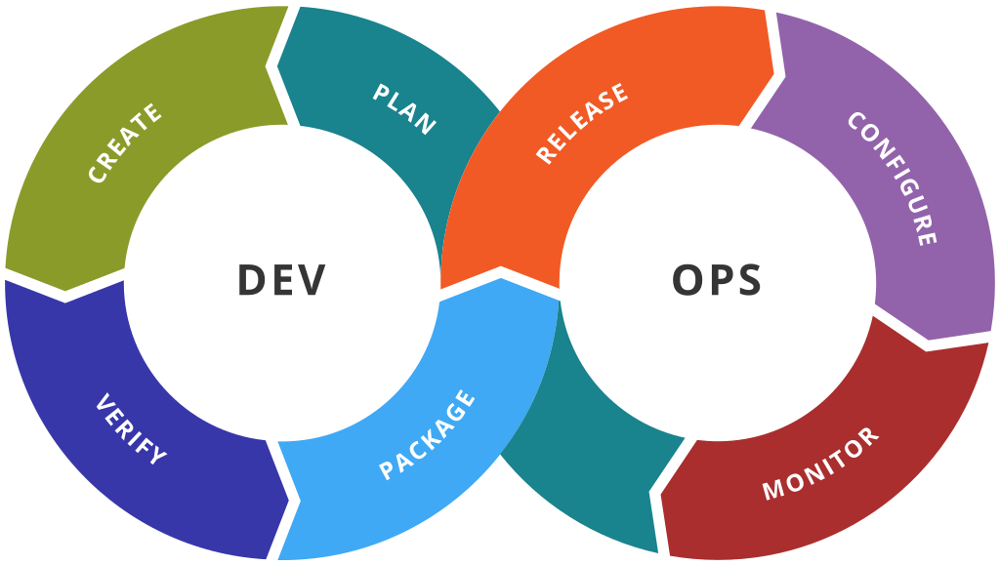

Class Plan
- Introduction DevOps
- Best tools used in DevOps
- Docker and its application in DevOps
- Lab - 1
What is DevOps?
- The term “DevOps” typically refers to the emerging professional movement that advocates a collaborative working relationship between Development and IT Operations, resulting in the fast flow of planned work (i.e., high deploy rates), while simultaneously increasing the reliability, stability, resilience and security of the production environment (Gene Kim).
Erstwhile of DevOps
Large firms like Google would
- Manage own firmware/hardware
- Use open source and contribute back
- Write own methods and scripts
- Sometime engineer own hardware
Results in
- Control over data and enviroment
- Complexity and change
A client in need of IT services or a app shop would
- Deploy on cloud like AWS
- Pay for lot of value added services
- Pay third-party tool to install and deploy
- Trust someone else chips and software
Results in
- Quick and simple setup
- Lack of control and expensive
DevOps

DevOps Toolchain
Tools for Automation
- CI/CD — Jenkins, Shippable, Bamboo
- Containerization — Docker, Rocket, Unik
- Orchestration — Kubernetes, Swarm, Mesos
- Deployment — Elastic Beanstalk, Octopus, Vamp
Jenkins

- Jenkins is a self-contained, open source automation server which can be used to automate all sorts of tasks related to building, testing, and delivering or deploying software.
- Jenkins can be installed through native system packages, Docker, or even run standalone by any machine with a Java Runtime Environment (JRE) installed.
https://jenkins.io/doc/
Docker

- Containerization is a technology that’s been around for a long time, but it’s seen new life with Docker. It packages applications as images that contain everything needed to run them: code, runtime environment, libraries, and configuration. Images run in containers, which are discrete processes that take up only as many resources as any other executable.
https://docker-curriculum.com/#introduction